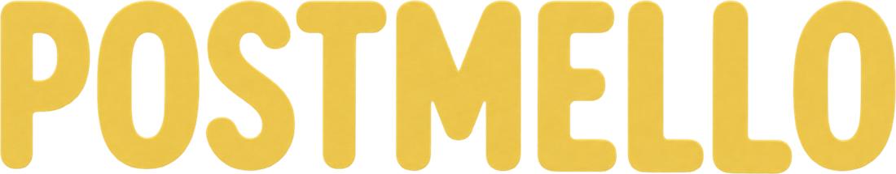

A quiet place
for letters.
Without the rush of messaging.
A private desk for digital letters between friends and family.
Coming first to iPad.

Without the rush of messaging.
A private desk for digital letters between friends and family.
Coming first to iPad.